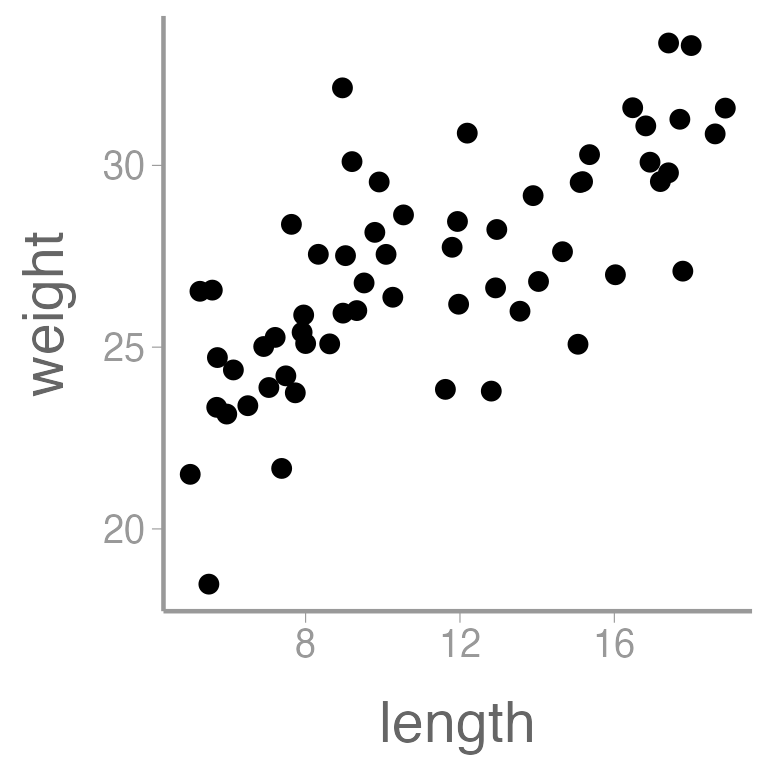
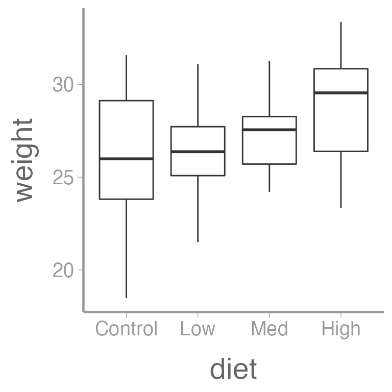
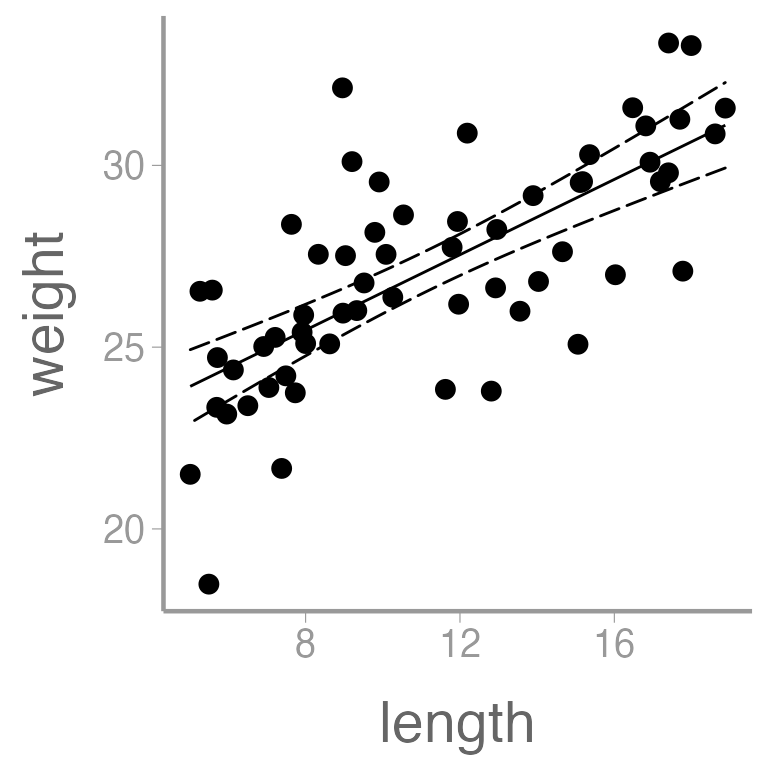
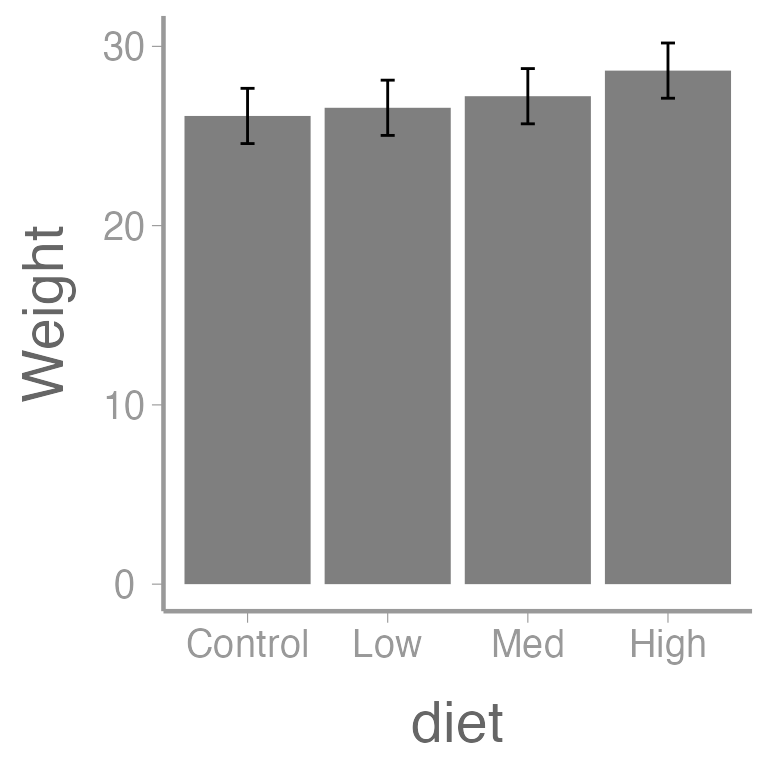
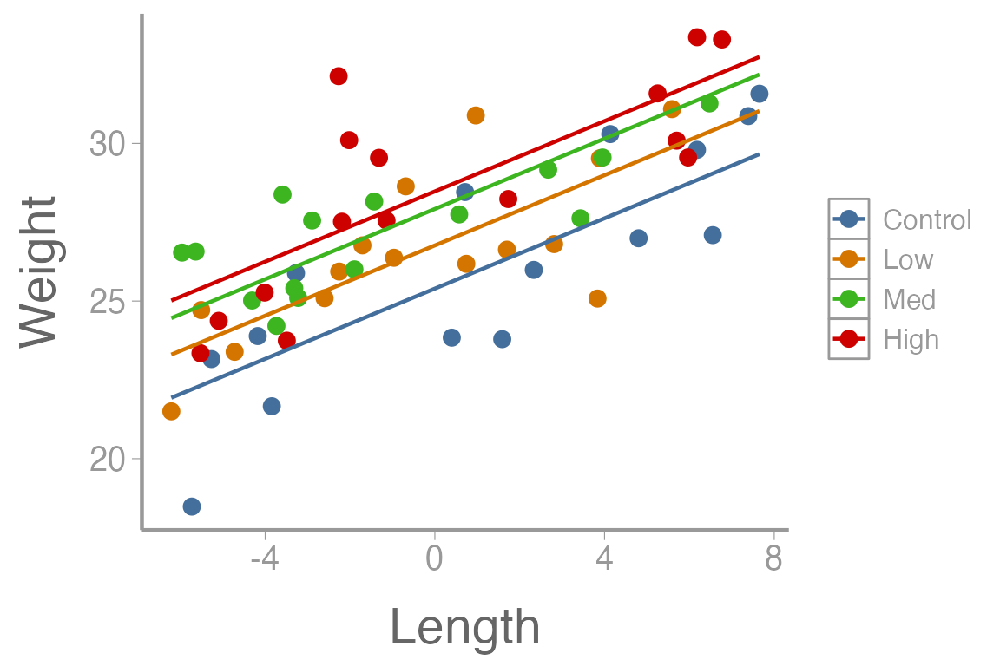

lab11_ANCOVA.RmdVery commonly, we are interested in doing a one-way ANOVA but we need to account for the effect of a continuous predictor variable. How do we include the continuous predictor in the ANOVA model? Analysis of covariance (ANOVA).
ANCOVA can be thought of as a hybrid between ANOVA and regression. Actually, it’s more accurate to say that ANOVA, regression, and ANCOVA are all linear models. And understanding how these models are the same, and how they differ, is critical to the application of modern statistical methods.
Load the data and check structure:
library(FANR6750)
data("dietData")
str(dietData)
#> 'data.frame': 60 obs. of 3 variables:
#> $ weight: num 23.8 26 30.3 25.9 18.5 ...
#> $ diet : chr "Control" "Control" "Control" "Control" ...
#> $ length: num 11.62 13.56 15.36 7.95 5.49 ...We need to change diet to a factor, and while doing so we’ll explicitly define the level order:
dietData$diet <- factor(dietData$diet, levels = c("Control", "Low", "Med", "High"))
levels(dietData$diet)
#> [1] "Control" "Low" "Med" "High"Let’s also visualize the data:
library(ggplot2)
ggplot(dietData, aes(x = length, y = weight)) +
geom_point()
ggplot(dietData, aes(x = diet, y = weight)) +
geom_boxplot()
And finally, let’s quantify the relationship between length and weight using a linear regression:
| Term | Estimate | SE | Statistic | p-value |
|---|---|---|---|---|
| (Intercept) | 21.3252 | 0.8069 | 26.430 | 0 |
| length | 0.5181 | 0.0674 | 7.685 | 0 |
We can also add regression lines and CIs to our plot using the
predict() function:
Create a new data frame containing a sequence of values of the predictor variable length
Predict weight using these values of length
Put predictions and data together for easy plotting
lengths <- dietData$length
nd <- data.frame(length = seq(min(lengths), max(lengths), length = 50))
E1 <- predict(fm1, newdata = nd, se.fit = TRUE, interval="confidence")
predictionData <- data.frame(E1$fit, nd)
ggplot() +
geom_point(data = dietData, aes(x = length, y = weight)) +
geom_ribbon(data = predictionData, aes(x = length, ymin = lwr, ymax = upr),
color = "black", linetype = "longdash", fill = NA) +
geom_path(data = predictionData, aes(x = length, y = fit)) 
Note that in this simple case, you could use the built in
stat_smooth() in ggplot2 to plot the
regression line, though that will not always work.
predict() is a more general method for creating and
plotting regression lines from fitted models.
It’s clear that there is a strong, positive relationship between
length and weight (the p-value for the slope coefficient for
length is so small that R rounds it to 0). If
we want to quantify whether there is an effect of diet on weight, we
will clearly need to control for length in our analysis.
lm()
We can also fit the conventional one-way ANOVA using
lm(). We do that by changing the contrasts=
argument so that the estimates will correspond to the additive
model:
fm2 <- lm(weight ~ diet, dietData, contrasts = list(diet="contr.sum"))
summary.aov(fm2)
#> Df Sum Sq Mean Sq F value Pr(>F)
#> diet 3 55 18.22 2.05 0.12
#> Residuals 56 497 8.87As always in R, there are multiple ways to do any task.
The aov() function gives identical results to the
lm() function above:
summary(aov(weight ~ diet, dietData, contrasts = list(diet="contr.sum")))
#> Df Sum Sq Mean Sq F value Pr(>F)
#> diet 3 55 18.22 2.05 0.12
#> Residuals 56 497 8.87Note that summary() will return an alternative output
compared to summary.aov():
summary(fm2)
#>
#> Call:
#> lm(formula = weight ~ diet, data = dietData, contrasts = list(diet = "contr.sum"))
#>
#> Residuals:
#> Min 1Q Median 3Q Max
#> -7.637 -1.925 -0.037 1.977 5.458
#>
#> Coefficients:
#> Estimate Std. Error t value Pr(>|t|)
#> (Intercept) 27.1396 0.3846 70.57 <2e-16 ***
#> diet1 -1.0218 0.6661 -1.53 0.13
#> diet2 -0.5659 0.6661 -0.85 0.40
#> diet3 0.0803 0.6661 0.12 0.90
#> ---
#> Signif. codes: 0 '***' 0.001 '**' 0.01 '*' 0.05 '.' 0.1 ' ' 1
#>
#> Residual standard error: 2.98 on 56 degrees of freedom
#> Multiple R-squared: 0.0991, Adjusted R-squared: 0.0508
#> F-statistic: 2.05 on 3 and 56 DF, p-value: 0.117Because we set the contrast argument to
contrast="contr.sum", the intercept is the grand mean
(\(\mu\)) and the other estimates are
the effect sizes (\(\alpha_i\)).
Also note that you can set the behavior for all subsequent
lm() or aov() calls, by setting
R’s options:
And to check the value of an option:
options("contrasts")Note that Options are reset every time you close and reopen
R
As we saw earlier, the predict function can also be used to obtain group means, SEs, and CIs from a one-way ANOVA:
nd2 <- data.frame(diet=levels(dietData$diet))
E2 <- predict(fm2, newdata=nd2,
se.fit=TRUE, interval="confidence")
(predData2 <- data.frame(E2$fit, nd2))
#> fit lwr upr diet
#> 1 26.12 24.58 27.66 Control
#> 2 26.57 25.03 28.11 Low
#> 3 27.22 25.68 28.76 Med
#> 4 28.65 27.11 30.19 High
predData2$diet <- factor(predData2$diet, levels = c("Control", "Low", "Med", "High"))
ggplot(predData2) +
geom_col(aes(x = diet, y = fit), fill = "grey50") +
geom_errorbar(aes(x = diet, ymin = lwr, ymax = upr), width = 0.1) +
scale_y_continuous("Weight") 
Recall the additive model:
\[\Large y_{ij} = \mu + \alpha_i + \beta(x_{ij} − \bar{x}) + \epsilon_{ij}\]
Make sure the contrasts are set as before:
Centering the covariate isn’t required, but doing so allows the intercept to be interpreted as the grand mean:
dietData$lengthCentered <- dietData$length - mean(dietData$length)Now we can fit the model using lm():
fm3 <- lm(weight ~ lengthCentered + diet, dietData)Always put the covariate before the treatment variable in the formula. With ANCOVA, we want to assess treatment effects after accounting for the continuous covariate
Understanding and interpreting parameters from complex linear models
can be challenging. If you are unsure about what R is doing
under the hood with factors, contrasts (and interactions), a great place
to start is looking at the model matrix. To do that, we need to better
understand how the model matrix is constructed.
Let’s start by creating two new versions of the diet data frame. We’ll also set the factor levels and center the length data on one of the new data frames:
df <- df.orig <- dietData
df$diet <- factor(df$diet, levels = unique(df$diet))
df$length <- df$length- mean(df$length) ### Center df$lengthNow, fit a linear model (first check the default contrasts):
options("contrasts")
#> $contrasts
#> [1] "contr.sum" "contr.poly"
mod1 <- lm(weight ~ length + diet, data = df, contrasts = list(diet="contr.treatment"))And look at the estimated coefficients:
coef(mod1)
#> (Intercept) length dietLow dietMed dietHigh
#> 25.3951 0.5573 1.3688 2.5265 3.0830Because contr.treatment was used,
(Intercept) represents the mean of the Control group, at
the mean value of length (which we have set to 0).
Now let’s look at the model matrix using the
model.matrix() function:
model.matrix(mod1)
#> (Intercept) length dietLow dietMed dietHigh
#> 1 1 0.3990 0 0 0
#> 2 1 2.3322 0 0 0
#> 3 1 4.1341 0 0 0
#> 4 1 -3.2730 0 0 0
#> 5 1 -5.7294 0 0 0
#> 6 1 7.6517 0 0 0
#> 7 1 1.5881 0 0 0
#> 8 1 6.1792 0 0 0
#> 9 1 -3.8436 0 0 0
#> 10 1 7.3886 0 0 0
#> 11 1 -5.2661 0 0 0
#> 12 1 6.5513 0 0 0
#> 13 1 -4.1749 0 0 0
#> 14 1 4.8042 0 0 0
#> 15 1 0.7117 0 0 0
#> 16 1 1.6993 1 0 0
#> 17 1 5.5913 1 0 0
#> 18 1 0.9654 1 0 0
#> 19 1 -4.7199 1 0 0
#> 20 1 -2.5990 1 0 0
#> 21 1 -0.9637 1 0 0
#> 22 1 -0.6864 1 0 0
#> 23 1 3.8912 1 0 0
#> 24 1 3.8348 1 0 0
#> 25 1 -1.7078 1 0 0
#> 26 1 -2.2548 1 0 0
#> 27 1 -6.2127 1 0 0
#> 28 1 -5.5085 1 0 0
#> 29 1 0.7417 1 0 0
#> 30 1 2.8120 1 0 0
#> 31 1 -3.2221 0 1 0
#> 32 1 -3.7347 0 1 0
#> 33 1 2.6719 0 1 0
#> 34 1 -2.8936 0 1 0
#> 35 1 -4.3085 0 1 0
#> 36 1 -5.9606 0 1 0
#> 37 1 3.9533 0 1 0
#> 38 1 -1.8963 0 1 0
#> 39 1 -5.6403 0 1 0
#> 40 1 6.4741 0 1 0
#> 41 1 -3.5908 0 1 0
#> 42 1 -1.4293 0 1 0
#> 43 1 0.5732 0 1 0
#> 44 1 -3.3137 0 1 0
#> 45 1 3.4332 0 1 0
#> 46 1 -2.2681 0 0 1
#> 47 1 -2.1892 0 0 1
#> 48 1 -1.1385 0 0 1
#> 49 1 5.2521 0 0 1
#> 50 1 5.7010 0 0 1
#> 51 1 -1.3168 0 0 1
#> 52 1 6.7679 0 0 1
#> 53 1 -5.5258 0 0 1
#> 54 1 -4.0120 0 0 1
#> 55 1 -2.0205 0 0 1
#> 56 1 -3.4903 0 0 1
#> 57 1 5.9692 0 0 1
#> 58 1 -5.0943 0 0 1
#> 59 1 6.1821 0 0 1
#> 60 1 1.7311 0 0 1
#> attr(,"assign")
#> [1] 0 1 2 2 2
#> attr(,"contrasts")
#> attr(,"contrasts")$diet
#> [1] "contr.treatment"Remember that, in the model matrix, there is one row for each observation in the data and one column for each parameter in the model. In this case, the columns correspond to:
At the bottom of print out, this function also tells you the contrasts used.
For factor levels (the final three columns in this case), the model matrix gives the values of the ‘dummy variables’ used to represent the factor diet. There will always be \(a-1\) dummy variables for a factor with a groups.
Why are there \(a-1\) dummy variables instead of \(a\)? Notice that the Control group is not in the design matrix. It has been taken as the “reference condition”: its mean is represented by the intercept. Where observations belong to the Control group, all the dummy variables have a value of 0.
To get the expected response for a particular observation, say row 1 of the data, we simply take the dot product (that is, a linear combination) of the coefficients with the appropriate row of the design matrix:
sum(coef(mod1) * model.matrix(mod1)[1,])
#> [1] 25.62
### in other words:
coef(mod1) %*% model.matrix(mod1)[1,]
#> [,1]
#> [1,] 25.62To do this for all rows in one go, use matrix multiplication:
coef(mod1) %*% t(model.matrix(mod1))
#> 1 2 3 4 5 6 7 8 9 10 11 12
#> [1,] 25.62 26.69 27.7 23.57 22.2 29.66 26.28 28.84 23.25 29.51 22.46 29.05
#> 13 14 15 16 17 18 19 20 21 22 23 24
#> [1,] 23.07 28.07 25.79 27.71 29.88 27.3 24.13 25.32 26.23 26.38 28.93 28.9
#> 25 26 27 28 29 30 31 32 33 34 35 36
#> [1,] 25.81 25.51 23.3 23.69 27.18 28.33 26.13 25.84 29.41 26.31 25.52 24.6
#> 37 38 39 40 41 42 43 44 45 46 47 48
#> [1,] 30.12 26.86 24.78 31.53 25.92 27.12 28.24 26.07 29.83 27.21 27.26 27.84
#> 49 50 51 52 53 54 55 56 57 58 59 60
#> [1,] 31.41 31.66 27.74 32.25 25.4 26.24 27.35 26.53 31.8 25.64 31.92 29.44What’s with the t() function? If you’re unsure, now’s a
good time to review matrix multiplication.
Next, what happens when we use contr.sum, or sum-to-zero
contrasts?
mod2 <- lm(weight ~ length + diet, data = df, contrasts = list(diet="contr.sum"))
coef(mod2)
#> (Intercept) length diet1 diet2 diet3
#> 27.1396 0.5573 -1.7446 -0.3758 0.7819The (Intercept) now represents the Grand Mean (because
we centered length). Also notice that the factor level now missing is
High. Where did it go? Actually, we don’t need it because
the effect of High can be calculated as
Grand.Mean - sum(diet1, diet2, diet3).
How do you know what the intercept represents in this case? The design matrix!
model.matrix(mod2)
#> (Intercept) length diet1 diet2 diet3
#> 1 1 0.3990 1 0 0
#> 2 1 2.3322 1 0 0
#> 3 1 4.1341 1 0 0
#> 4 1 -3.2730 1 0 0
#> 5 1 -5.7294 1 0 0
#> 6 1 7.6517 1 0 0
#> 7 1 1.5881 1 0 0
#> 8 1 6.1792 1 0 0
#> 9 1 -3.8436 1 0 0
#> 10 1 7.3886 1 0 0
#> 11 1 -5.2661 1 0 0
#> 12 1 6.5513 1 0 0
#> 13 1 -4.1749 1 0 0
#> 14 1 4.8042 1 0 0
#> 15 1 0.7117 1 0 0
#> 16 1 1.6993 0 1 0
#> 17 1 5.5913 0 1 0
#> 18 1 0.9654 0 1 0
#> 19 1 -4.7199 0 1 0
#> 20 1 -2.5990 0 1 0
#> 21 1 -0.9637 0 1 0
#> 22 1 -0.6864 0 1 0
#> 23 1 3.8912 0 1 0
#> 24 1 3.8348 0 1 0
#> 25 1 -1.7078 0 1 0
#> 26 1 -2.2548 0 1 0
#> 27 1 -6.2127 0 1 0
#> 28 1 -5.5085 0 1 0
#> 29 1 0.7417 0 1 0
#> 30 1 2.8120 0 1 0
#> 31 1 -3.2221 0 0 1
#> 32 1 -3.7347 0 0 1
#> 33 1 2.6719 0 0 1
#> 34 1 -2.8936 0 0 1
#> 35 1 -4.3085 0 0 1
#> 36 1 -5.9606 0 0 1
#> 37 1 3.9533 0 0 1
#> 38 1 -1.8963 0 0 1
#> 39 1 -5.6403 0 0 1
#> 40 1 6.4741 0 0 1
#> 41 1 -3.5908 0 0 1
#> 42 1 -1.4293 0 0 1
#> 43 1 0.5732 0 0 1
#> 44 1 -3.3137 0 0 1
#> 45 1 3.4332 0 0 1
#> 46 1 -2.2681 -1 -1 -1
#> 47 1 -2.1892 -1 -1 -1
#> 48 1 -1.1385 -1 -1 -1
#> 49 1 5.2521 -1 -1 -1
#> 50 1 5.7010 -1 -1 -1
#> 51 1 -1.3168 -1 -1 -1
#> 52 1 6.7679 -1 -1 -1
#> 53 1 -5.5258 -1 -1 -1
#> 54 1 -4.0120 -1 -1 -1
#> 55 1 -2.0205 -1 -1 -1
#> 56 1 -3.4903 -1 -1 -1
#> 57 1 5.9692 -1 -1 -1
#> 58 1 -5.0943 -1 -1 -1
#> 59 1 6.1821 -1 -1 -1
#> 60 1 1.7311 -1 -1 -1
#> attr(,"assign")
#> [1] 0 1 2 2 2
#> attr(,"contrasts")
#> attr(,"contrasts")$diet
#> [1] "contr.sum"Look carefully at the matrix (it might help to estimate the expected value for a few observations “by hand” to see how the dummy variables add or take away each parameters for different treatments).
So we can see that the design matrix has changed simply because we used different contrasts in the model but did the fitted values change?
all(round(coef(mod1) %*% t(model.matrix(mod1)),5) == round(coef(mod2) %*% t(model.matrix(mod2)),5))
#> [1] TRUEDid the residuals change?
No indeed. Specifying different contrasts in this way is called a
re-parameterization of the model. It’s a different way of
doing the arithmetic of the linear model, but it comes out to the same
thing. We choose a parameterization based on how we want to interpret
the results. For ANOVA or ANCOVA, that’s usually sum-to-zero contrasts
using contr.sum.
summary(fm3)
#>
#> Call:
#> lm(formula = weight ~ lengthCentered + diet, data = dietData)
#>
#> Residuals:
#> Min 1Q Median 3Q Max
#> -3.821 -1.221 -0.252 1.216 4.919
#>
#> Coefficients:
#> Estimate Std. Error t value Pr(>|t|)
#> (Intercept) 27.1396 0.2406 112.79 < 2e-16 ***
#> lengthCentered 0.5573 0.0594 9.38 5.2e-13 ***
#> diet1 -1.7446 0.4238 -4.12 0.00013 ***
#> diet2 -0.3758 0.4173 -0.90 0.37171
#> diet3 0.7819 0.4234 1.85 0.07020 .
#> ---
#> Signif. codes: 0 '***' 0.001 '**' 0.01 '*' 0.05 '.' 0.1 ' ' 1
#>
#> Residual standard error: 1.86 on 55 degrees of freedom
#> Multiple R-squared: 0.654, Adjusted R-squared: 0.628
#> F-statistic: 25.9 on 4 and 55 DF, p-value: 4.15e-12Note that the null hypothesis of no diet effect is rejected, even though it was not rejected before.
It may also be helpful to view the ANOVA table using:
summary.aov(fm3)
#> Df Sum Sq Mean Sq F value Pr(>F)
#> lengthCentered 1 278.3 278.3 80.09 2.5e-12 ***
#> diet 3 82.2 27.4 7.89 0.00018 ***
#> Residuals 55 191.1 3.5
#> ---
#> Signif. codes: 0 '***' 0.001 '**' 0.01 '*' 0.05 '.' 0.1 ' ' 1And as before, we can create predictions of weight over a sequences of lengths, for every level of diet:
lengthC <- dietData$lengthCentered
nd3 <- data.frame(diet=rep(c("Control", "Low", "Med", "High"), each = 20),
lengthCentered=rep(seq(min(lengthC), max(lengthC),length = 20), times = 4))
E3 <- predict(fm3, newdata=nd3, se.fit = TRUE, interval = "confidence")
predData3 <- data.frame(E3$fit, nd3)
ggplot() +
geom_point(data = dietData, aes(x = lengthCentered, y = weight, color = diet)) +
geom_line(data = predData3, aes(x = lengthCentered, y = fit, color = diet)) +
scale_y_continuous("Weight") +
scale_x_continuous("Length")
We can also look at multiple comparisons using:
library(multcomp)
summary(glht(fm3, linfct=mcp(diet="Tukey")))
#>
#> Simultaneous Tests for General Linear Hypotheses
#>
#> Multiple Comparisons of Means: Tukey Contrasts
#>
#>
#> Fit: lm(formula = weight ~ lengthCentered + diet, data = dietData)
#>
#> Linear Hypotheses:
#> Estimate Std. Error t value Pr(>|t|)
#> Low - Control == 0 1.369 0.688 1.99 0.2039
#> Med - Control == 0 2.526 0.697 3.62 0.0033 **
#> High - Control == 0 3.083 0.683 4.51 <0.001 ***
#> Med - Low == 0 1.158 0.683 1.70 0.3357
#> High - Low == 0 1.714 0.682 2.51 0.0684 .
#> High - Med == 0 0.557 0.687 0.81 0.8493
#> ---
#> Signif. codes: 0 '***' 0.001 '**' 0.01 '*' 0.05 '.' 0.1 ' ' 1
#> (Adjusted p values reported -- single-step method)Complete the following and upload your R markdown file to ELC before next week.
Fit an ANCOVA model to the treeData data set, which
represent the height of trees following a fertilizer experiment. The
covariate is pH.
Use sum-to-zero contrasts (contr.sum) so that your
estimates correspond to the additive model from the lecture
notes.
Interpret each of the estimates from lm(). What is
the null hypothesis associated with each p-value?
Plot the data and the regression lines. Use different colors or symbols to distinguish the treatment groups.
Which fertilizer treatments are significantly different?
You may format the report however you like but it should be well-organized, with relevant headers, plain text, and the elements described above.
As always:
Be sure the output type is set to:
output: html_document
Title the document:
title: "Lab 11 assignment"
Be sure to include your first and last name in the
author section
Be sure to set echo = TRUE in all R
chunks so we can see both your code and the output
Please upload both the html and .Rmd
files when you submit your assignment
See the R Markdown reference sheet for help with creating
R chunks, equations, tables, etc.
h/t to Bryan Nuse for this material↩︎